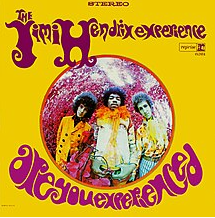

<main class="window">
    <div class="clearfix">
    
    <div>
        Are You Experienced is the debut studio album by the Jimi Hendrix Experience, released in May 1967. 
        The album was an immediate critical and commercial success, and is widely regarded as one of the greatest albums of all time. 
        It features Jimi Hendrix's innovative approach to songwriting and electric guitar playing, which soon established a new direction in psychedelic and rock music as a whole. 


     
<ul>
       <h2>Some of the Tracks</h2>
    <li>Purple Haze </li>
    <li>Manic Depression </li>
    <li>Hey Joe </li>
    <li>Love or Confusion </li>
    <li>May This Be Love </li>
    <li>I Don't Live Today </li>
    <li>The Wind Cries Mary </li>
    <li>Fire </li>
    <li>Third Stone from the Sun </li>
    <li>Foxy Lady </li>
    <li>Are You Experienced?  </li>
       
     </ul>

    </div>
    </div>
</main>